The Problem
It is generally understood that parking is a hassle. Being surrounded by college kids who require cars for daily life at school has made us well aware of all types of hardships when finding parking. Issues that lead to being late to class, overpaying for spots, getting tickets, and overall stress and anxiety. And, of course, these issues with parking can be found everywhere, and every driver, no matter how experienced, can relate to feeling anxious when looking for parking.
The Solution
An app that helps users easily and quickly find parking anywhere. It will be able to clear up any confusion relating to legality of parking spaces, price of parking spaces, maximum parking time, etc. so the user has no doubts about their parking spot.
User Research
Research Goals
To start off, we wanted to research our users and find out what problems drivers most often experience.
We wanted to gain insights into:
- Which aspects of the parking experience cause anxiety and confusion
- What motivates people to park in certain areas and in certain parking spots
- What people first look for when trying to find parking
- Exactly when and where people wolid want to use this app
- Which issues are prominent enough to focus on for our app
We created a survey and sent it out to large, diverse groups of individuals. While a decent amount of these individuals were college-aged people, we ensured this group was diverse. We got insights from people who love driving and drive every day, to those who only drive once a week. Those who see their car as a tool to just get to class, and those who road trip to the beach, to cities, and more with their car. We felt that this was a good representation of the general population’s driving habits. To ensure we were representing all age groups fairly, however, we ensured to reach out to older generations and got responses from them as well.
The 70+ responses from our survey strongly supported our initial perception of people’s experience with parking.
Less than 25% of people say they find parking right away in a new place. 60% say it takes 5-10 minutes.
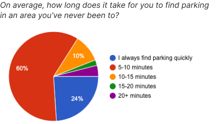
Only 12% of respondents said that they always know if their spot is legal. Half of respondents know if their parking is legal only some of the time or less.
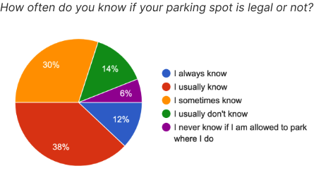
80% of the respondents have experienced confusion when trying to comprehend signs with parking information.
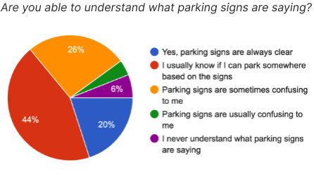
The survey alone has given us clear insights about the general population’s experience with parking, as well as how common, and when, struggles and confusion occur. This information served as a great base for how people feel about parking. With this information, we were able to administer interviews with thought-provoking questions, and have conversations that further satisfied our research goals.
So, following the survey, we performed more in-depth interviews with a diverse range of people; new drivers to experienced drivers, those who love driving and those who don’t, as well as different age groups. These interviews gave us integral information about specific aspects of parking that are common pain points, as well as what people’s process of finding parking is - ultimately achieving our research goals.
Analyzing Data
Taking insights from our survey, as well as interviews and what participants shared, we found the biggest hardships people had with parking could mostly fall into 3 themes: wasting time, wasting money, and a lack of knowledge on legality of spaces.
We organized lots of thoughts and ideas discussed by people we interviewed into these three themes - many of these ideas/insights were shared by multiple respondents.
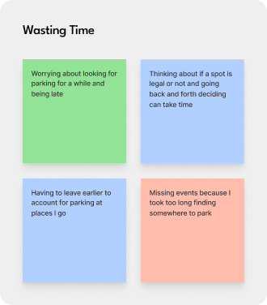
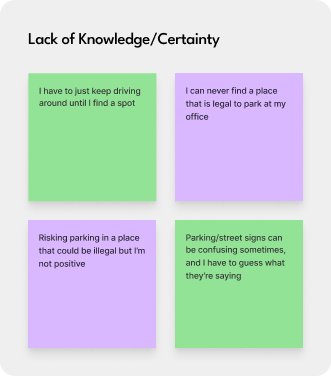
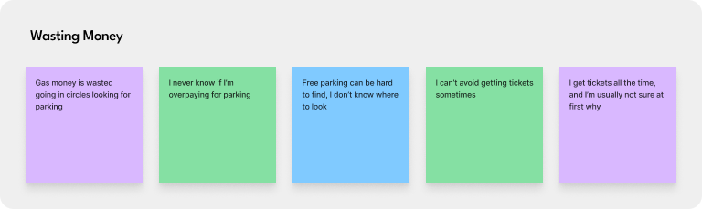
Ideation
With these themes, we started to brainstorm features we could design to aid with the recurring themes found in our interviews.
Some main, larger features we came up with:
- a map showing parking around the user, so time isn’t wasted aimlessly searching
- the cost of parking labeled clearly
- a detailed info section about the legality for each parking area
- clearly describes what the signs say: how many hours can you park, during what hours, is a permit required, etc.
- filters to filter between parking types, cost, etc.
- easy navigation options
Beginning the Design
After defining the most important features of our app, we started brainstorming designs. First, with a crazy eights exercise.
Then, compiled common themes from our individual drawings to one main design which we collaborated on as a group:

The team and our messy (but super important) sketches.
Wireframes
Then we translated our favorite aspects of the sketches into cleaner wireframes.

Final Design
After simplifying and consolidating features, we decided to have the app focusing on one screen - the map screen. All places to park, whether they be meters, parking lots, or just legal free curbside parking, would populate the map with icons. What makes our app stand out is that every single area where there is physical, legal, parking space is noted (and every area where there isn't is noted too!) This makes it so there are absolutely no doubts or confusion about where users park, allowing them to leave their car with zero hesitation.
Explore all parking nearby
To have information about parking be as detailed and specific as possible, everything they see is on the road is explained, including where parking is not allowed. The user can tap these areas to see information about parking there, or why parking is not allowed there (no physical curb space, requires a permit, etc).
All of this parking information and data can be acquired from services like ParkMobile and Google/Apple maps, as well as local governments.
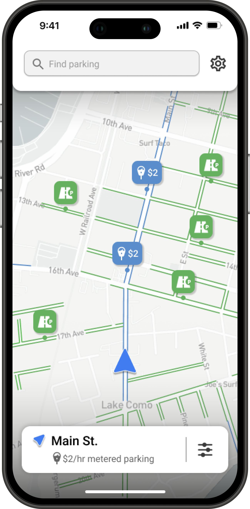
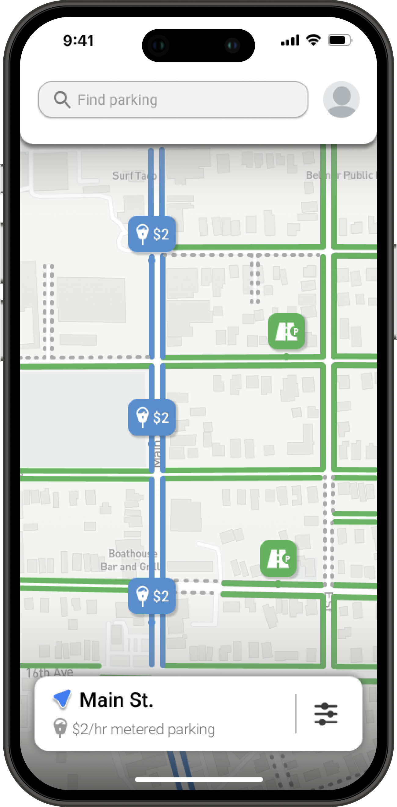
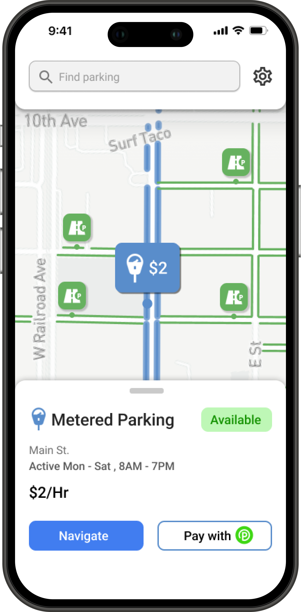
Learn about parking spots
Tapping on an icon or highlighted curbside for parking opens up the spot details, where the user can see the type of parking, how much it costs, and what the active hours are so the user knows how long they’ll have to pay (or when a parking garage closes). Any other specific rules or regulations are listed here as well.
The user can navigate to the spot with their default maps app, and pay for the meters with Parkmobile.
Show only spots that are useful
For the filters screen, we wanted to ensure all aspects of a parking spot were covered, to help with any kind of stay. Length of parking is important as some spots only allow people to park for 2 hours, for example, so this would ensure users are seeing spots that work best for their situation. If users don’t want to pay for parking, they can choose to only see free parking as well.
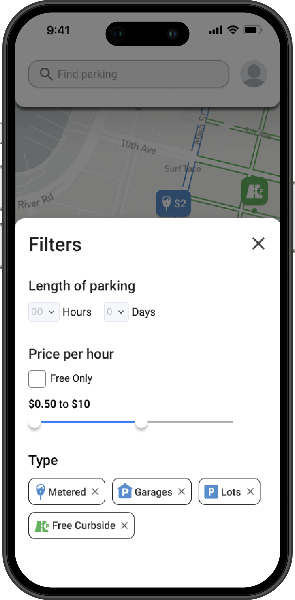
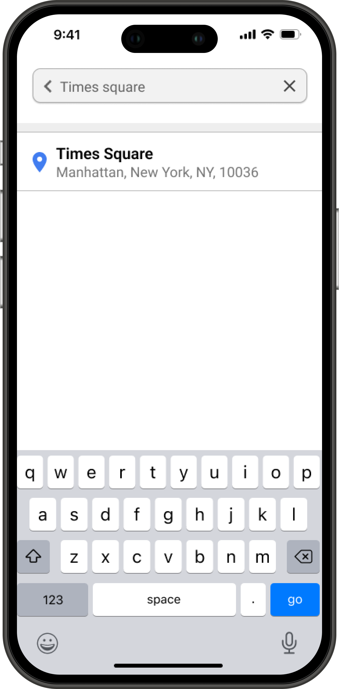
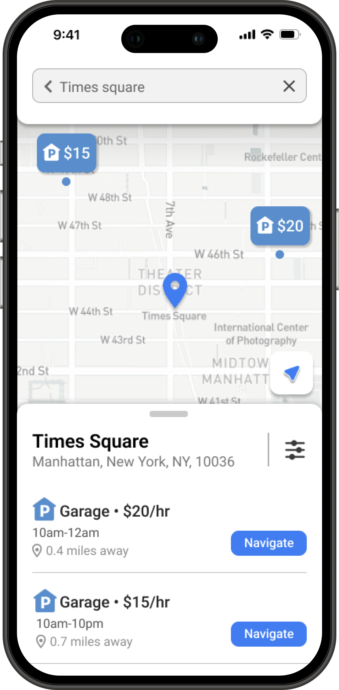
Find parking ahead of time
The search bar allows the user to search anywhere they want, to see what parking looks like there. They can see how far the best parking is from their desired location, then choose to navigate there to eliminate any time looking for parking when arriving.
Takeaways
This was the most thorough design project I have done from start to finish, and I learned a lot.
What was new to me?
Working on a team every week on the same project on a schedule was new to me in this context. From brainstorming ideas to figuring out which problems to solve together really helped me be cooperative with teammates under pressure and ensure that everyone is able to have equal contribution.
What was the most challenging?
Figuring out which problems to focus on, as well as ensuring the app clears up all confusion on parking was difficult. There are so many aspects in the process of parking somewhere that can be hard for users, and we wanted to ensure the app was able to solve them in a clear, easy to understand way. Coming up with a design that could guide the user seamlessly through the parking process and include all necessary information in an organized manner was a challenge, but I am very happy with the result.
What would I do differently?
I would have liked to perform more usability studies earlier on in the process. We did some once we felt like we had finalized the design, and we had to go back to make some adjustments afterwards. If we did them earlier on, we could ensure that we weren’t adding features that users would find confusing or unhelpful. Usability studies are important to ensure that your design is going in the right direction and is fully catering to users’ needs.
How does my solution help users?
Spot shows all parking around the users location on a map. It is unique as it shows every possible place where users can park, as opposed to similar apps, which leave out some details, and can still have users doubtful about parking in some areas. For all roads, it is clear on the app if you can park there or not, for how long, and how much it would cost. The user is linked to ParkMobile and other platforms for paying for spots covered by these apps for a seamless payment experience. All confusion is cleared and no information is left out in this app, which makes it very helpful for users in all parking situations.